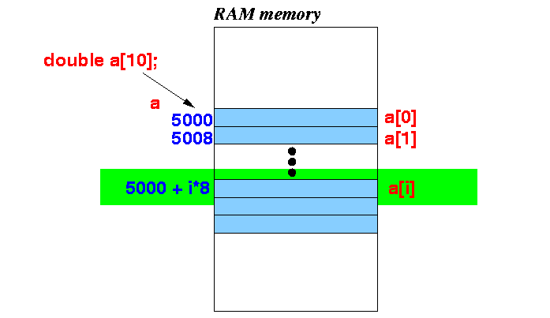
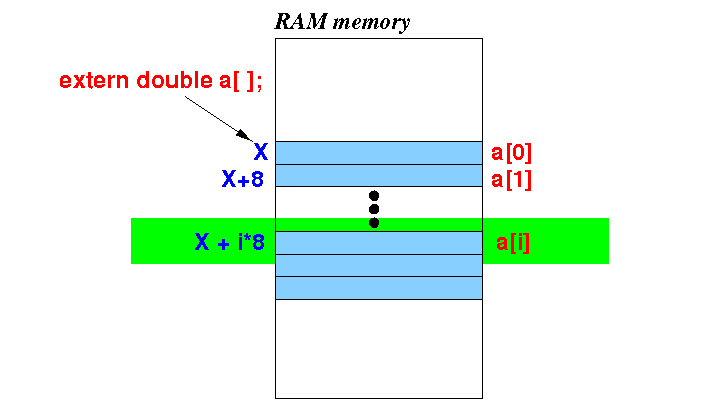
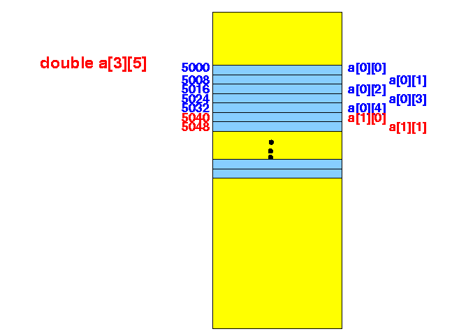
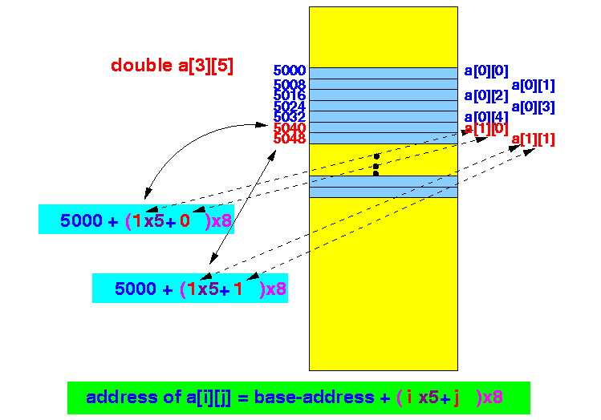

- Defining an array:
DataType var[ size ]; // One dimensional array DataType var[ size1 ][ size2 ]; // Two dimensional array
- Example:
double a[10]; // array of 10 double variables
Result:
 Notice that:
- a[0] is located at the base address (in the example, we assume that the base address is 5000)
- a[1] is
located at address base-address
+ 8
(a double variable
occupies 8 bytes of memory)
- In general, a[i] is located at address base-address + i×8
- Recall that:
- Declaring a variable = Provide sufficient information to the C compiler to access the variable in memory.
- Syntax to declare a
one-dimensional array variable:
extern DataTyp arrayVarName [ ] ;
- Example:
File where the array is defined Declaring the (global) array variable double a[10]; // Array definition void func( ); // Declare func( ) int main( int argc, char* argv[] ) { int i; for ( i = 0; i < 10; i++ ) a[i] = i*i; func( ); }extern double a[ ]; // Array declaration void func( ) { int i; for ( i = 0; i < 10; i++ ) printf("a[%d] = %lf\n", i, a[i]); }
- Example Program:
(Demo above code)

- The main Prog file: click here
- The array declaration Prog file: click here
How to run the program:
- Right click on link and
save in a scratch directory
- To compile: gcc declare-array1a.c declare-array1b.c
- To run: ./a.out
- Suppose the C compiler processed the following
array declaration:
extern double a[ ] ;The C compiler will handle accessing the array element a[i] as follows:
- It generate a dummy base address
X
(that the linker must update)
- The C compiler will use the type information (double is 8 bytes) to generate the address of X + i×8 for the array element a[i].
- It generate a dummy base address
X
(that the linker must update)
- Summary:

- The linker is responsible to replace the dummy offset with the actual offset of the array variable.
- Fact:
- The C compiler will
ignore any text between
the brackets
[...] in an
array declaration:
extern DataType arrayVarName [ /* ignored ! */ ] ;
- The C compiler will
ignore any text between
the brackets
[...] in an
array declaration:
- A common practice in C
is to write the actual array size
between the brackets in an
array declaration
(as a reminder to
not exceed the
array size)
- Example:
File where the array is defined Declaring the (global) array variable double a[10]; // Array definition void func( ); // Declare func( ) int main( int argc, char* argv[] ) { int i; for ( i = 0; i < 10; i++ ) a[i] = i*i; func( ); }extern double a[10]; // Array declaration void func( ) { int i; for ( i = 0; i < 10; i++ ) printf("a[%d] = %lf\n", i, a[i]); }
- Recall the syntax to
define a
two-dimensional array:
DataType arrayVarName [ size1 ] [ size2 ] ;
Example: (array definition)
double a[3][5];
- Syntax to declare a
two-dimensional array:
extern DataType arrayVarName [ ] [ size2 ] ;
- Example: (array declaration)
File where the array is defined Declaring the 2-dim. array variable double a[3][5]; // Array definition void func( ); // Declare func( ) int main( int argc, char* argv[] ) { int i, j; for ( i = 0; i < 3; i++ ) for ( j = 0; j < 5; j++ ) a[i][j] = i + j; func( ); }extern double a[ ][5]; // Array declaration void func( ) { int i; for ( i = 0; i < 3; i++ ) { for ( j = 0; j < 5; j++ ) printf("a[%d][%d] = %lf ", i, j, a[i][j]); putchar('\n"); } }
- Example Program:
(Demo above code)
- The main Prog file: click here
- The array declaration Prog file: click here
How to run the program:
- Right click on links and
save in a scratch directory
- To compile: gcc declare-array2a.c declare-array2b.c
- To run: ./a.out
- Fact:
- The C compiler stores a 2-dimensional array in a row-wise fashion inside the computer memory
Example: double a[3][5] is stored in memory as follows:

- In order to enable the
C compiler to
compute the address of
the variable a[i][j],
we must tell the
C compiler the length of the
second dimension of the array:
 As you can see from the above figure:
address of a[i][j] = base-address + ( i*SIZE-of-the-2nd-dimension + j ) * 8
- Fact:
- The C compiler will
ignore any text between
the brackets
[...] in the
leading (first) dimenison
of an
array declaration:
extern DataType arrayVarName [ /* ignored ! */ ] [ SIZE ] ;
- The C compiler will
ignore any text between
the brackets
[...] in the
leading (first) dimenison
of an
array declaration:
- A common practice in C
is to write the actual array size
of the
leading (first) dimenison
in an
array declaration
(as a reminder to
not exceed the
array size)
- Example: (array declaration)
File where the array is defined Declaring the 2-dim. array variable double a[3][5]; // Array definition void func( ); // Declare func( ) int main( int argc, char* argv[] ) { int i, j; for ( i = 0; i < 3; i++ ) for ( j = 0; j < 5; j++ ) a[i][j] = i + j; func( ); }extern double a[3][5]; // Array declaration void func( ) { int i; for ( i = 0; i < 3; i++ ) { for ( j = 0; j < 5; j++ ) printf("a[%d][%d] = %lf ", i, j, a[i][j]); putchar('\n"); } }